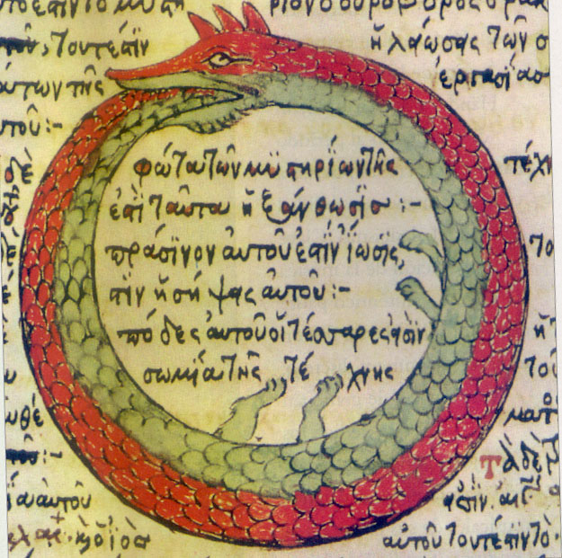

Self-consistency principle
Time-travel Paradoxes
Time travel raises fundamental questions about causality, particularly when an event in the future influences its own past [2]. Classical examples, such as the grandfather paradox [3], illustrate how circular causal relationships might lead to logical contradictions. However, such paradoxes do not necessarily imply that all forms of time travel are impossible. A self-consistent causal loop may avoid contradictions if every event remains compatible with the entire history.
Closed Timelike Curves
Closed timelike curves are theoretical structures in general relativity that allow an object to follow a path through spacetime and return to its own past [4]. They provide a mathematical framework for investigating causal loops within a single spacetime. The Novikov self-consistency principle suggests that events along such curves must satisfy global consistency constraints [5]. This raises the possibility that circular causality may be logically consistent under certain physical conditions.
Circular Universe as a Whole
Causal Closure
Can the principle of self-consistency be extended from individual events to the universe as a whole? A causally closed universe might exist without requiring an external first cause, provided that its causal relationships collectively form a self-consistent structure. In this picture, the origin of the universe could be explained through causal processes that are themselves part of the universe's history. Within such a closed causal loop, each event has a cause, but the causal chain has no first event.
Cosmological Natural Selection
Lee Smolin's cosmological natural selection hypothesis proposes that universes may reproduce through black holes [6]. Across generations, the physical parameters such as interaction strengths may slightly vary. A further hypothesis is that, in some offspring universes, both how time is defined and how it flows could differ from our current understanding.
Spawning a Parent Universe
A causal loop could also connect multiple universes, with a descendant universe eventually giving rise to one of its own causal ancestors [7]. This would require a physical mechanism linking universe creation back to an earlier part of the causal structure, potentially through unconventional spacetime geometries or temporal relationships. This would allow a universe to participate in its own causal origin.
Open Questions
Logical and Mathematical Consistency
The sequence of universe-generation events must be logically and mathematically consistent. Any variation in physical parameters must fit within the causal loop without introducing contradictions. In a fully self-contained scenario (which I think is one of the best), both the variations in physical parameters and the very law governing those variations would arise from processes within the loop, without external intervention. A concrete mathematical model would need to establish whether all these conditions can be satisfied together.
Physical Realization and Stability
A separate question is whether a physical mechanism can produce it and keep it stable. While some idealized models can be constructed mathematically, their stability may break down when additional physical conditions are taken into account [8]. A viable model would need to explain both how the loop forms and how it remains stable against the effects of observed physical phenomena. Ultimately, such a model must explain how the proposed mechanism could operate in our own observable universe.
Observational Distinguishability
A further question is whether observations could distinguish a universe with circular causality from one without it. That is, for observers within the universe, the available observations may be identical whether or not circular causality actually exists, making the hypothesis difficult to test. A testable model would therefore need to predict specific observational signs that distinguish it from competing cosmological explanations. The challenge is to determine whether such effects exist and whether accessible observations could detect or constrain them.
Role of Humanity
Developing a Set of Falsifiable Hypotheses
Addressing these open questions requires turning the idea of circular causality into explicit physical models with testable consequences. These models should explain how a consistent causal loop could form and remain stable, and yield falsifiable predictions [9] that distinguish it from alternative cosmological explanations. Each theoretical or observational result would help support, refine, or challenge particular mechanisms.
Engineering Time and Universe Creation to Close the Loop
Humanity (including what humanity has built) might eventually acquire the ability to manipulate spacetime and create new universes. One hypothesis describes that cosmological evolution selected our universe's physical parameters to support intelligent life and technologies [10]. This raises a possibility. Our purpose may extend beyond discovering the causal structure of the universe. We may eventually complete that structure, unless the laws of physics rule it out.
References
- Ouroboros (Wikipedia).
- Time travel (Wikipedia).
- Temporal paradox (grandfather paradox; Wikipedia).
- Closed timelike curve (Wikipedia).
- Novikov self-consistency principle (Wikipedia).
- Cosmological natural selection (Wikipedia).
- J. Richard Gott III and Li-Xin Li, "Can the Universe Create Itself?" (1998).
- William A. Hiscock, "Quantized Fields and Chronology Protection" (2000).
- Falsifiability (Wikipedia).
- Jeff Shainline, "Does Cosmological Evolution Select for Technology?" (2020).